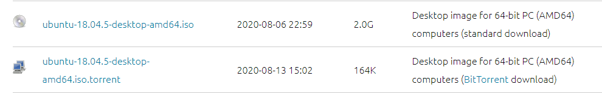
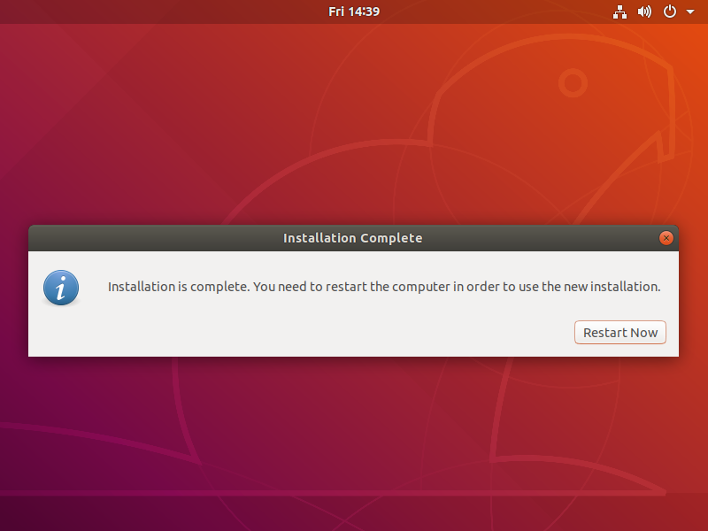
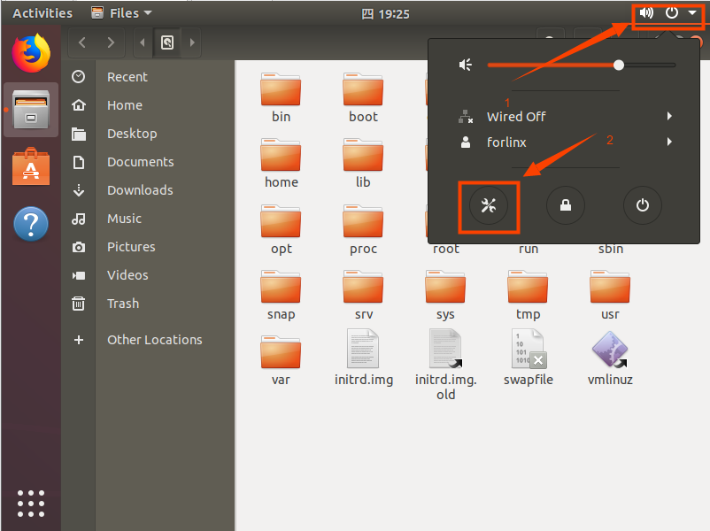
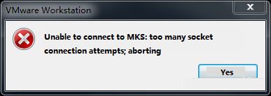
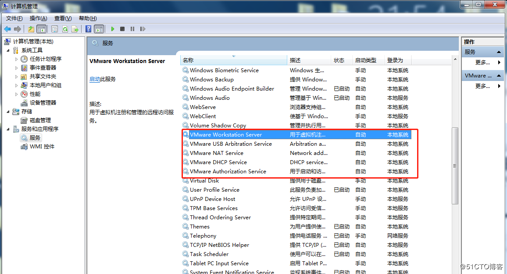

Linux5.10.149_User’s Compilation Manual_V1.3
Document classification: □ Top secret □ Secret □ Internal information ■ Open
Copyright
The copyright of this manual belongs to Baoding Folinx Embedded Technology Co., Ltd. Without the written permission of our company, no organizations or individuals have the right to copy, distribute, or reproduce any part of this manual in any form, and violators will be held legally responsible.
Forlinx adheres to copyrights of all graphics and texts used in all publications in original or license-free forms.
The drivers and utilities used for the components are subject to the copyrights of the respective manufacturers. The license conditions of the respective manufacturer are to be adhered to. Related license expenses for the operating system and applications should be calculated/declared separately by the related party or its representatives.
Overview
This manual is designed to help you quickly familiarize yourselves with the product, and understand the interface functions and testing methods. It primarily covers the testing of interface functions on the development board, the methods for flashing images, and troubleshooting procedures for common issues encountered in use. In the process of testing, some commands are annotated to facilitate the your understanding, mainly for practical use. Please refer to “OKA40i-C_Linux5.10.149+Qt5.15.8 User’s Compilation Manual” provided by Forlinx for kernel compilation, related application compilation methods and development environment construction.
There are total six parts:
Chapter 1. is about the installation of virtual machine software, providing a brief introduction to the download and installation of VMware software.
Chapter 2. offers the loading of the Ubuntu system;
Chapter 3. is about the setup, configuration and installation of necessary tools for the Ubuntu system, as well as common issues related to the development environment;
Chapter 4. is the data and compilation method required for the compilation of the source code of the product;
Chapter 5. is about the configuration of the Qt compilation environment and methods for compiling programs;
Chapter 6. is the method of building the terminal cross compiling environment.
Application Scope
This software manual is applicable to the OKA40i platform Linux 5.10 operating system of Forlinx.
Revision History
Date
User Manual Version
Revision History
15/04/2025
V1.0
OKA40i_Linux5.10.149+Qt5.15.8_User’s Compilation Manual Initial Version
07/11/2023
V1.1
1. Modifying the path of common source code files;
2. Adding a separate compilation method for the application;
3. Adding an adding method for the application.21/03/2024
V1.2
1. Modifying the compilation description and code path;
2. Canceling the./build. sh. config selection configuration step.19/06/2024
V1.3
1. Replacing some pictures in the manual;
2. Correcting the layout of the manual.
1. VMware Virtual Machine Software Installation
This chapter mainly introduces the installation of VMware virtual machines, using VMware Workstation 15 Pro v15.1.0 as an example to demonstrate the installation and configuration process of the operating system.
1.1 VMware Software Download and Purchase
Visit Vmware official website https://www.vmware.com/cn.html for downloading Workstation Pro and obtaining the product key. VMware is a paid software that requires purchasing, or you can choose to use a trial version.
After the download is complete, double-click the installation file to start the installation program.
1.2 VMware Software Installation
Double-click the startup program to enter the installation wizard.
Click on “Next”.
Check the terms in the license agreement that I accept, then click “Next”.
Modify the installation location to the partition where you want to install the software on your computer, then click ‘“Next”.
Check and click on “Next”.
Check the box to add a shortcut, then click “Next”.
Click “Installation”.
Wait for the installation to complete.
Click “Finish” to try it out. If users need to use it for a long time, they need to buy it from the official and fill in the license.
2. Loading the Existing Ubuntu Development Environment
Note:
It is recommended for beginners to directly use the pre-built virtual machine environment provided by Forlinx, which already includes installed cross-compiler and Qt environment. After understanding this chapter, you can directly jump to the compilation chapter for further study;
The development environment provided for general users is: forlinx (username), forlinx (password). The superuser is: root (username), root (password).
There are two ways to use a virtual machine environment in VMware: one is to directly load an existing environment, and the other is to create a new environment. First talk about how to load an existing environment.
First, download the development environment provided by Forlinx. In the development environment documentation, there should be an MD5 checksum file. After downloading the development environment, you should verify the integrity of the compressed package using the MD5 checksum. (You can use an on-line MD5 checksum tool or download a specific MD5 checksum tool for this purpose). To check if the checksum in the verification file matches the checksum of the file itself. If they match, the file download is successful. If they don’t match, it suggests that the file may be corrupt, and you should consider downloading it again.
Select all compressed files, right-click and extract to the current folder or your own directory:
Unzip it and get the development environment 18.04. Ubuntu 64-bit.vmx in the 18.04 folder is the file to open for the virtual machine.
Open the installed virtual machine.
Select the directory where the 18.04 virtual machine file just extracted is located, and double-click to open the startup file.
After loading, click to open the virtual machine to run and enter the system interface.
The default login account for automatic login in the development environment is “forlinx”.
3. New Ubuntu Development Environment Setup
Note: Beginners are not recommended to set up a system on their own. It is recommended to use an existing virtual machine environment. If you do not need to set up the environment, you can skip this section.
This chapter mainly explains the process of setting up the Ubuntu system and installing Qt Creator. If the user is not using Qt, the installation of Qt Creator can be ignored.
3.1 Ubuntu System Setup
3.1.1 Ubuntu Virtual Machine Setup
Step 1: Open the VMware software and click [File]/ [New Virtual Machine]. Enter the following interface:
Step 2: Select Custom and click “Next”.
Select the compatibility with the corresponding version of VMware, which can be found in Help->About VMware Workstation, and click “Next”.
Select Install the operating system later and click “Next”.

Keep the default settings and click “Next”.

Modify the name and installation location of your virtual machine, and click “Next”.

Configure the number of CPU based on your computer’s actual specifications.
Set the memory size according to your actual specifications (For Linux kernel compilation, a memory size of 4GB is sufficient, while Android source code compilation requires higher memory requirements).
Set the network type, default to NAT mode then click “Next”. Keep the default values for the remaining steps until you reach the step to specify the disk capacity.
The default selection for the IO controller type here is LSI.
The default selection here is also SCSI.
Choose to create a new virtual disk here.
Set the disk size to 200GB, select the disk provisioning format, and then click “Next”.
Specify the disk file, the default one here is fine.
By default, you can click “Finish” and wait for the installation to complete, so that the virtual machine creation is complete.
3.1.2 System Installation
In the previous section, we have created a virtual machine, but we haven’t installed the operating system yet, so the virtual machine cannot be started. Next, we will install the Ubuntu operating system in the newly created virtual machine.
Step 1: Go to the Ubuntu official website to obtain the Ubuntu 18.04 image. The download address for Ubuntu 18.04 is:
https://www.ubuntu.com/download/desktop
The installed Ubuntu version is 18.04. One of the reasons for choosing 18.04 is that all the source code compilation operations have been compiled and verified on Ubuntu 18.04. There may be slight differences when performing these operations on different Ubuntu system versions.
Download address: http://releases.ubuntu.com/18.04/

Download “ubuntu-18.04.5-desktop-amd64.iso”. After downloading the mirror image, you can proceed with the system installation operation.
Right-click on the created virtual machine name and select “Settings” from the pop-up menu.

The “Virtual Machine Settings” menu will pop up.
Click on CD/DVD (SATA), select “Use ISO image file,” browse and choose the previously downloaded Ubuntu image, then click “OK” to confirm.
After setting up the image, ensure that the network is available. Then, start the virtual machine and proceed with the installation of the Ubuntu image.
After starting the virtual machine, wait for the installation interface to appear as shown below.

After selecting the language on the left side as shown in the image, click “Install Ubuntu”, and the language selection interface will pop up. The default language of Ubuntu is English, but of course, you can also choose Others.
The default selected language can also be reset at a later stage, after the selection is complete continue.

Next, select “Continue” as the default option to proceed with the installation. The installation process might be slow. Then, click “Continue” again.
By default, when you click on “Install Now”, a dialog box will appear as shown in the image. Simply click “Continue” to proceed.

Next, select the timezone. You can either click on the Shanghai timezone or enter “Shanghai” (or choose the appropriate timezone based on your location). Then, click “Continue” to proceed. Finally, set your username and password. You can choose either automatic login or login with a username and password. Click “Continue” to start the automatic installation.
If the internet connection is poor, you can Skip without affecting the installation process.

Click “Restart” Now to reboot.

The system interface after the reboot is complete.
The ubuntu system installation is complete.
3.1.3 Ubuntu Basic Configuration
After installing the Ubuntu 18.04 operating system, there are a few configurations to make.
VMware Tools Installation:
Next, install VMware Tools. Without installing this tool, you won’t be able to copy and paste and drag file between the Windows host and the virtual machine. First click on “Virtual Machine” on the VMware navigation bar, then click “Install VMware Tools” in the drop-down box.
Once done, enter Ubuntu and the VMware Tools CD will appear on your desktop and click into it.

Enter and see a compressed file VMwareTools-10.3.10-12406962.tar.gz (it may be different for different VM versions); copy the file under the home directory (i.e. the directory with the home personal username)

Press [Ctrl+Alt+T] to bring up the Terminal Command Interface and enter the command:
forlinx@ubuntu:~$ sudo tar xvf VMwareTools-10.3.10-12406962.tar.gz

After the extraction is complete, a file named “vmware-tools-distrib” will appear

Go back to the terminal and type cd vmware-tools-distrib to enter the directory.
Enter: sudo ./vmware-install.pl followed by pressing Enter. Then, enter your password and the installation process will begin. When prompted, you can input “yes” and press Enter to proceed. For any other inquiries, simply press Enter to go with the default installation settings.

Once the VMware tools is complete, we can implement file copy and paste between Windows and Ubuntu.
The virtual machine is displayed full screen:
If the virtual machine is not able to be displayed in full screen, you can resolve this issue by clicking on “View” and selecting “Autofit Guest.” This will adjust the display to fit the screen automatically, enabling you to have a full-screen experience in the virtual machine.
Make most of the system settings in the location shown. A lot of the setup requirements on Ubuntu can be done here.

Virtual machine hibernation settings:
Also, the default hibernation is 5min, if you don’t want to set hibernation, just set it to Never by setting Power->Blank screen.

3.1.4 Network Settings for Virtual Machine
3.1.4.1 NAT Connection Method
By default, after the virtual machine is installed, the network connection method is set to NAT, which shares the host machine’s IP address. This configuration does not need to be changed when performing tasks like installing dependencies or compiling code.
When the VMware virtual NIC is set to NAT mode in a virtual machine, the network in the Ubuntu environment can be set to dynamic IP. In this mode the virtual NAT device and the host NIC are connected to communicate for Internet access. This is the most common way for our VM to access the external network.
3.1.4.2 Connections for Bridges
When the VMware virtual NIC device is in bridge mode, the host NIC and the virtual machine NIC communicate through the virtual bridge, and the network IP and the host need to be set in the same network segment in the Ubuntu environment. If accessing an external network, you need to set the DNS to be consistent with the host NIC. If TFTP, SFTP and other servers are used, the network contact mode of the virtual machine needs to be set as the bridge mode.
3.2 Toolkit Installation
The development environment provided by us has been installed and can be skipped.
To install Linux dependencies, it is required to have the Ubuntu 18.04 64-bit version installed and an internet connection.
Step 1: Copy the file setup_env.sh to the Ubuntu home directory;
User Profile \tools\setup_env.sh
Step 2: Add executable permissions to the setup _ env. sh and run it;
forlinx@ubuntu:~$ chmod u+x setup_env.sh
forlinx@ubuntu:~$ ./setup_env.sh
The following prompts appear during the installation process, and you need to take corresponding actions:
Press Enter at this prompt.
Enter “Y” at this prompt and press Enter.
3.3 Qt Creator Installation
Download the qt-creator 4.5.2 package from the qt-creator website https://download.qt.io/official_releases/qtcreator/
Download and copy [qt-creator-opensource-linux-x8](https://download.qt.io/official_releases/qtcreator/4.5/4.5.2/qt-creator-opensource-linux-x86_64-4.5.2.run 6_64-4.5.2.run to the home directory of the current user, attach the executable permission and execute:
forlinx@ubuntu:~$ chmod 777 qt-creator-opensource-linux-x86_64-4.5.2.run
forlinx@ubuntu:~$ ./qt-creator-opensource-linux-x86_64-4.5.2.run
The following screen will pop up, click “Next” to proceed to the next step:
In the following screen, register or log in to your account and click “Next” to proceed to the next step:
In the following screen, click “Next” to proceed to the next step:
In the following interface, click “Browse…” to select the installation path of Qtcreator, after the selection is complete, click “Next” to enter the next step:
In the following screen, check the first item and click “Next” to proceed to the next step:
Select the radio box “I have read and agree to the terms contained in the license agreement” button in the following screen, before clicking “Next”:
In the following screen, click “Install” to install Qt.
After the installation is complete, the following interface will be displayed, uncheck the option “Launch Qt Creator” and click “Finish” to complete the installation of Qtcreator:
When opening the software, execute:
forlinx@ubuntu:~$ cd /home/forlinx/qtcreator-4.7.0/bin
forlinx@ubuntu:~/qtcreator-4.5.2/bin$ ./qtcreator
3.4 Solutions to VMware Errors
Error 1: Unable to connect to MKS. Too many socket connection attempts; giving up.

Solution: My Computer-> Right click-> Manage-> Services and Applications-> Services: Turn on all services related to VMware

After the service starts successfully, restart the virtual machine; or hang the virtual machine first, and when the service starts, continue to run the hung virtual machine;
Error 2: Internal error

Solution: Refer to solution 1
Error 3: Unable to install service VMware Authorization Service (VMAuthdService)

Solution: win+R Enter the services. Msc.

Then find the service and start it up as an authorization and authentication service for starting and accessing virtual machines.

WMI must start first.

Error 4：Failed to install the hcmon driver

Solution: Delete C:\Windows\System32\drivers\hcmon.sys, then install again.
Error 5: Intel VT-x in disabled state

Solution:
Enter the BIOS interface (F2 or F12) when booting;
configuration–>intel virtual technology–>change sabled to enabled–>save the settings, exit and restart;
Reopen VMware and power on the virtual machine. If that doesn’t work, just turn the firewall off and reopen the VM. (varies by machine).
Error 6: The virtual machine appears to be in use… Acquiring Ownership (T)
Solution:
Shut down the virtual machine;
Enter the storage directory of the virtual machine and delete the *.lck file. The lck represents the locked file;
Open the Windows Task Manager and kill the VMware process.

Restart the virtual machine.
Error 7: Failed to lock file
Solution:
Enter the storage directory of the virtual machine;
Delete .vmem.lck，.vmdk.lck，*.vmx.lck;
Restart the virtual machine and enter the virtual machine normally.
Error 8：The virtual machine could not be started because there was not enough memory available on the host.
Solution: The virtual machine does not have enough memory to run the maximum requirement of the image. Increase the memory of the virtual machine and restart the virtual machine.
4. Linux Compilation
Note: Please do not skip this paragraph：
The development environment is the hardware and software platform that developers need during the development process. The development environment is not a fixed style.
The previous section explained in detail how to build an embedded Linux development environment. If you already know a lot about embedded development, you can build the environment according to your needs. If the environment is not the same as this manual and an error occurs, you can resolve it by searching for relevant information from some of the big Linux forums and websites. The environment described in this manual is a pre-built development environment provided by us. If you are not very familiar with embedded development, we recommend using the development environment provided by Forlinx. The development environment provided for general users is: forlinx (username), forlinx (password). The superuser is: root (username), root (password).
4.1 Preparation Before Compilation
4.1.1 Versions
Virtual Machine Software: Vmware 15.1.0;
Recommended OS: Ubuntu 18.04 64-bit Edition;
Buildroot cross tool chain: arm-linux-gnueabi-gcc-7.3.1;
Bootloader version: u-boot-2018.07;
Kernel version: linux-5.10.149;
Development board QT version: qt5.15.8.
4.1.2 Source Code Copy and Release
Kernel source path: user profile \ Linux \ source \
1. Copy Source Code
The A40i source package includes the toolchain, user sdk, Linux kernel, filesystem, test program source code, and some tools.
forlinx@ubuntu:~$ mkdir /home/forlinx/work //Create working directory
Copy the source package to the virtual machine /home/forlinx/work directory.
You can directly drag and drop the source package from your computer to a folder on the desktop of the virtual machine, or use a shared folder to copy it using the command; here please focus on the use of shared folders.
There are many kinds of file transfers between ubuntu and Windows hosts. After installing VMware Tools, you can set up a virtual machine shared folder to mount the file directory of the Windows host to ubuntu for file sharing.
Click “Virtual Machine” on the menu bar and select “Settings”.
Click “Options”, enable “Shared Folders”, set the shared directory on the Windows host, and click “OK”.

After the file sharing setup of the virtual machine is complete, put the source package OKA40i-linux-sdk.tar.bz2 into the shared folder of the Windows host; here please name it share.
The shared folder is in the mount directory /mnt/hgfs/share in ubuntu; view the files in the mount directory.
Copy the source code from the shared folder to the Ubuntu/home/forlinx/work directory and verify it.
forlinx@ubuntu:~$ sudo cp /mnt/hgfs/share/OKA40i-linux-sdk.tar.bz2 /home/forlinx/work/
[sudo] password for forlinx: forlinx
forlinx@ubuntu:~$ cd /home/forlinx/work
forlinx@ubuntu:~/work$ md5sum OKA40i-linux-sdk.tar.bz2 //Verify the source code packet
******************************* OKA40i-linux-sdk.tar.bz2
forlinx@ubuntu:~/work$ tar xvf OKA40i-linux-sdk.tar.bz2
4.1.3 Source Code Directory Structure
Structure
OKA40i-linux-sdk // Unzipped source code folder
├── brandy // Contains source code related to boot0 and uboot (currently not open-sourced)
├── bsp // Tina5.0 independent repository architecture, which includes most of Allwinner's drivers
├── build // Compilation script directory
├── buildroot // buildroot version 202205
├── build.sh -> build/top_build.sh
├── device // Mainly contains board-level configuration files
├── kernel // Linux kernel
├── platform // Allwinner application layer software packages
├── prebuilt
├── test
└── tools // Compilation and packaging tools
Introduction to Main Directories and Files
buildroot
buildroot/config/buildroot // Storage path for configuration files of some source codes in the file system
├──custom // Files added by Forlinx to the file system (these files will be included in the image)
├──forlinx // Compilation configurations of software packages added by Forlinx
└──allwinner // Compilation configurations of software packages added by Allwinner
buildroot/package // Storage path for application source codes
├──auto // Self-developed software packages of Allwinner buildroot
├──cedarx // Allwinner aw multimedia cedarx framework code
├──libcedarc // Allwinner aw multimedia cedarc framework code
└──forlinx // Forlinx test demos
device:
device/config/chips/a40i_h/bin // Storage path for uboot files
device/config/chips/a40i_h/boot-resource/boot-resource/bootlogo.bmp // Boot logo
device/config/chips/a40i_h/configs/OKA40i-C/buildroot // Storage path for buildroot solution configurations
├──BoardConfig.mk // Board type configuration for the buildroot solution
├──env.cfg // uboot environment variables
├──sys_partition.fex // Partition table configuration for the buildroot solution, default is AB system
└──env-ab.cfg // Env configuration for the AB system solution
device/config/chips/a40i_h/configs/OKA40i-C/board.dts // Symbolic link file of the device tree involved in compilation
device/config/chips/a40i_h/configs/OKA40i-C/linux-5.10 // Storage path for device tree and file system configurations
├──board-lcd1024x600.dts // Device tree for the lcd screen
├──board-lvds.dts // Device tree for the lvds screen
├──board-mipi.dts // Device tree for the mipi screen
├──board-1000M-100M.dts // Device tree for the dual network ports (1000M and 100M)
└──buildroot_bsp_defconfig // buildroot configuration file
device/config/chips/a40i_h/configs/OKA40i-C/sys_config.fex // boot0 configuration file
device/config/chips/a40i_h/configs/OKA40i-C/uboot-board.dts // uboot device tree file involved in compilation
device/config/chips/a40i_h/configs/OKA40i-C/uboot // Storage path for uboot screen device trees
├──uboot-board-lcd1024x600.dts // uboot device tree for the lcd screen
├──uboot-board-lvds.dts // uboot device tree for the lvds screen
└──uboot-board-mipi.dts // uboot device tree for the mipi screen
bsp
bsp // Storage path for Allwinner drivers and other files
├──configs/linux-5.10/sun8iw11p1.dtsi // Kernel underlying device tree file
├── drivers // Kernel drivers
├── include // Kernel header files
├── modules // Code for the main nand and gpu modules
├── platform
└── ramfs // Source code of the ramfs file system
Other files are less likely to be modified and can be viewed by yourself.
4.2 Source Code Compilation
Before compiling, make sure that the development environment has been set up and the source code has been decompressed.
4.2.1 Configuration Compilation Options
Execute the following command to configure
forlinx@ubuntu:~$ cd /home/forlinx/work/OKA40i-linux-sdk
forlinx@ubuntu:~/work/OKA40i-linux-sdk$ ./build.sh config
Different screens are used, and the corresponding device tree files are different. The default device tree for U-Boot is uboot-board-lcd1024x600.dts, and the default device tree for the kernel is board-lcd1024x600.dts.
The device tree file path is: OKA40i-linux-sdk/device/config/chips/a40i_h/configs/OKA40i-C/
Screen |
Uboot Device Tree |
Kernel device tree |
|---|---|---|
Lcd1024*600 |
uboot-board-lcd1024x600.dts |
board-lcd1024x600.dts |
Mipi1024*600 |
uboot-board-mipi.dts |
board-mipi.dts |
Lvds1280*800 |
uboot-board-lvds.dts |
board-lvds.dts |
By default, the compiled image supports Forlinx lcd1024 * 600 screen display. If mipi or LVDS display is required, it is necessary to modify the device tree link file, replace uboot, and recompile. Take the mipi screen as an example:
forlinx@ubuntu:~/work/OKA40i-linux-sdk$ cd OKA40i-linux-sdk/device/config/chips/a40i_h/configs/OKA40i-C
forlinx@ubuntu:~/work/OKA40i-linux-sdk$ ln -snf linux-5.10/board-mipi.dts board.dts
forlinx@ubuntu:~/work/OKA40i-linux-sdk$ cd OKA40i-linux-sdk/device/product/bin
forlinx@ubuntu:~/work/OKA40i-linux-sdk$ cp u-boot-sun8iw11p1_mipi.bin u-boot-sun8iw11p1.bin
forlinx@ubuntu:~/work/OKA40i-linux-sdk$ cd OKA40i-linux-sdk
forlinx@ubuntu:~/work/OKA40i-linux-sdk$ ./build.sh dts
forlinx@ubuntu:~/work/OKA40i-linux-sdk$ ./build.sh pack
4.2.2 Full Compilation Test
forlinx@ubuntu:~/work/OKA40i-linux-sdk$ ./build.sh
Note: The following commands are for individual compilation and can be skipped after a full./build. sh. It will be used for subsequent source code modification.
4.2.3 Compiling Kernel Separately
Linux kernel configuration:
forlinx@ubuntu:~/work/OKA40i-linux-sdk$ ./build.sh menuconfig
The Linux save configuration:
forlinx@ubuntu:~/work/OKA40i-linux-sdk$ ./build.sh saveconfig
Linux kernel compilation:
forlinx@ubuntu:~/work/OKA40i-linux-sdk$ ./build.sh kernel
Linux device tree compilation:
forlinx@ubuntu:~/work/OKA40i-linux-sdk$ ./build.sh dts
Generated files location: OKA40i-linux-sdk/out/a40i_h/OKA40i-C/buildroot/
Generated intermediate file location: OKA40i-linux-sdk/out/kernel/build
4.2.4 Compiling Buildroot Separately
Buildroot configuration:
forlinx@ubuntu:~/work/OKA40i-linux-sdk$ ./build.sh buildroot_menuconfig
Buildroot configuration save:
forlinx@ubuntu:~/work/OKA40i-linux-sdk$ ./build.sh buildroot_saveconfig
Buildroot compilation:
forlinx@ubuntu:~/work/OKA40i-linux-sdk$ ./build.sh buildroot_rootfs
Compile output directory: OKA40i-linux-sdk/out/a40i_h/OKA40i-C/buildroot/buildroot/build
Note: If you want to compile a software package separately, you can delete the corresponding software package directory in the output directory, or delete the files beginning with.stamp in the corresponding software package directory, and then recompile
4.2.5 Image Packaging
The above compilation process can be completed after the image generation, we will generate the file packaged into an image.
forlinx@ubuntu:~/work/OKA40i-linux-sdk$ ./build.sh pack
Generated image location:
4.2.6 Boot Image Modification
Note: You can choose to do it according to your own requirements. After the operation, you need to recompile and package.
Modify the bootlogo. bmp startup logo under the OKA40i-linux-sdk/device/product/boot-resource/boot-resource/directory. The default is a 24bit color logo of 800x480, which is displayed in the center. If the resolution does not match the size of the logo, please change it yourself.
4.2.7 Compiling and Adding Applications Separately
If you compile the application separately, you need to configure the cross-compilation environment (cross-compiler and qmake).
forlinx@ubuntu:~$ export PATH=$PATH:/home/forlinx/work/OKA40i-linux-sdk/out/a40i_h/OKA40i-C/buildroot/buildroot/host/bin:/home/forlinx/work/OKA40i-linux-sdk/out/a40i_h/OKA40i-C/buildroot/buildroot/build/qt5base-f31e001a9399e4e620847ea2c3e90749350140ae/bin
Sysroot path:
/home/forlinx/work/OKA40i-linux-sdk/out/a40i_h/OKA40i-C/buildroot/buildroot/host/arm-buildroot-linux-gnueabihf/sysroot
Note: The cross-compilation environment does not need to be configured to use the build. Sh to compile the source code. The script has already been configured.
Separate Compilation Method:
A method for compiling a cmd application independently is provided. For the compilation of the Qt program, please refer to Chapter 5.
You can copy a cmd application from the application source code Forlinx provided for independent compilation. For example, for the 4G dial - up program quectel - CM, copy the project folder to your own directory.
First, you need to set the environment variables before compilation. The environment variables are shown in the environment variable settings at the beginning of Section 4.2 Source Code Compilation (you need to reset them every time you open a shell window).
Then modify the cross-compiler configuration in the Makefile.
Modify CC ?= arm-linux-gcc to CC = arm-linux-gnueabihf-gcc
Finally, execute make in the quectel-CM directory and wait for the compilation to complete. Copy the executable file generated by compilation to the development board for testing.
Add application to source code:
First, prepare your application and add the application source code to the buildroot/config/buildroot/forlinx directory.
Then add the configuration file to the buildroot/config/buildroot/forlinx directory. For the specific content of the configuration file, refer to the configuration files of other existing applications for modification.
Then modify the platform. mk and Config. in under the buildroot/config/buildroot directory, and configure the file path just added to these two files.
Finally, the whole source code can be compiled and applied to the image.
5. QT Environment Configuration
The Forlinx forum provides virtual machines with installed environments for users to use. If you want to set up the environment by yourselves, please refer to the method in “3.3 Qt Creator Installation” to install Qt Creator.
5.1 Qt Creator Operation
Click the qtcreator icon in the left startup menu, or click show applications in the lower left corner to find the qtcreator icon and open it.
5.2 QT Compilation Environment Configuration
Here, only the paths in the provided development environment are introduced. The cross - compiler, Qt libraries, relevant tools, and the sysroot required for setting up the compilation environment have been placed in the /opt/host directory. Please refer to your own file storage paths.
If you set up the environment by yourself, the cross - compiler, Qt libraries, relevant tools, and the sysroot are separately provided in the user materials. They are located in User Materials/Tools/host.tar.bz2. You can extract them to the development environment and configure them on your own.
5.2.1 Cross Compiler Configuration
5.2.2 QT Version Library Configuration
5.2.3 Kit Configuration
5.3 Application Compilation and Operation
This chapter uses the backlight test program provided by Forlinx as an example to illustrate how to compile and run the application program.
5.3.1 Backlight Test Program Configuration
User profile\Linux\test program\forlinx_demo.tar.bz2;
Copy the backlight _ gui to the ~/Desktop directory;
Click “File” -> “Open File or Project” in Qt Creator. In the pop - up window, select “~/Desktop/backlight/backlight.pro”. Click open. The principle is as follows:
A pop-up window will appear to indicate whether to keep the original environment settings, select no, as follows:
The Configure Project window pops up, check the kit: arm (or the name defined by yourself) just configured, and click Configure Project to automatically enter the Edit interface, as shown below:
Click projects on the left side, add the version of Qt used according to the actual situation, and select the path to generate the compiled file.
Click Build->Build All to compile, or click the hammer icon in the lower left corner.
The Build progress bar in the lower right corner indicates that the compilation is complete, as follows:
At this point, you will see the newly generated binary file backlight_gui under the file generation path:

6. Terminal Cross-compilation Environment Setup
6.1 Forlinx Development Environment
If you are only engaged in application development, there is no need to copy the SDK to the virtual machine. You can configure the cross-compilation environment by following the operations shown in the figure below.
6.2 Setting up the Environment Manually
Copy User Materials/Tools/host.tar.bz2 to the development environment, extract it to any directory, and then perform the following operations.
forlinx@ubuntu:~$ export PATH=$PATH:Decompress path/host/bin